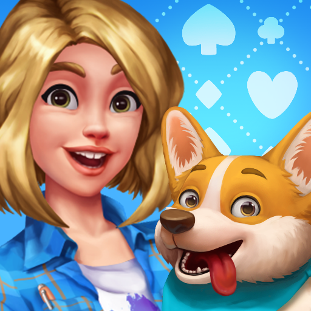

Adrian Pratama
Profile
I am a creative and result oriented person with a background in game cutscene design and graphic design.
Holds a dual degree in Computer Science and Visual Design, combining artistic vision with strong technical
problem-solving abilities. Experienced in crafting engaging visual narratives for games and delivering high-
quality design solutions as a freelancer. Currently expanding expertise in front-end development and
data analytics, with a keen interest in databases and web design. I am eager to apply and grow technical
and creative skills in dynamic, innovative environments.
Experience
GRAPHIC DESIGN FREELANCES | EN CLAIRE | FEBRUARY 2022 - PRESENT
As a freelance graphic designer, I have had the opportunity to work on diverse and impactful design projects
across multiple industries. My key responsibilities and achievements include:
- Designed chocolate packaging assets, ensuring brand alignment and consumer appeal.
- Created posters and Instagram campaign posts to enhance brand visibility and engagement.
- Redesigned pharmacy product packaging to improve visual appeal and compliance with industry standards.
- Designed a mascot for an F&B service, strengthening brand identity and enhancing customer engagement.
- Revamped pharmacy brochures for clearer communication and a cohesive brand message.
- Overhauled graphic standards manuals for pharmacy brands, modernizing visual identity and streamlining branding guidelines.
- Developed creative design for print materials, brochures, banners, and signs.
- Improved client satisfaction by creating visually appealing and impactful graphic designs for various marketing materials.
CUTSCENE DESIGNER | TRIPLEDOT STUDIO | JUNE 2021 - FEBRUARY 2025
As a Mid Cutscene Game Designer, I played a key role in the creation and implementation of high-quality
in-game cutscenes, ensuring both technical precision and narrative impact. My responsibilities included:
- Produced visually appealing, bug-free cutscenes based on provided storyboards, adhering to creative vision and maintaining high-quality standards.
- Participated in preview meetings, offering insights to enhance cinematic flow and narrative impact.
- Collaborated with lead designers to prepare and organize cutscenes according to project timelines.
- Maintained communication with project managers to align cutscene production with broader project goals.
- Designed and implemented mini animations, adding dynamic elements to enhance player engagement.
- Investigated, analyzed, and debugged software issues reported by users or internal teams.
- Analyzed databases (spreadsheets) to diagnose data-related bugs and inconsistencies.
- Worked with multiple departments (technical artists, storyboarders, narrative team) to ensure seamless cutscene integration.

GUEST LECTURER | UNIVERSITAS PELITA HARAPAN | JANUARY 2023 - JUNE 2023
As a Guest Lecturer at UPH, I had the privilege of sharing my expertise and passion for digital art
with students in the Digital Animation and Digital Illustration programs. My key teaching responsibilities included:
- Instructed students on photo bashing techniques for digital animation, guiding them in creating compelling, realistic environments.
- Led digital illustration lessons covering composition, color theory, and character design fundamentals.
- Provided constructive feedback and mentorship, helping students refine their artistic skills and develop unique styles.
- Evaluated student performance through exams and assignments, providing constructive feedback for improvement.
Education
- Universitas Bina Nusantara | August 2017 | Jakarta | GPA: 3.0
- Universitas Pelita Harapan | July 2021 | Tangerang | GPA: 3.41
Adrian Pratama. All rights reserved.